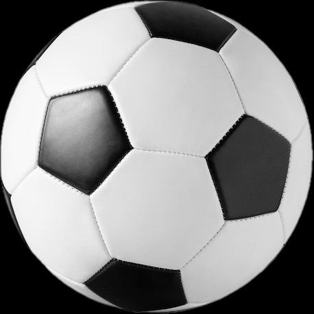

Турнирная таблица чемпионата Финляндии
|  | Команда | Очки |
|---|---|---|
| 1 | Интер Турку | 46 |
| 2 | Ильвес Тампере | 45 |
| 3 | ХИК Хельсинки | 44 |
| 4 | КуПС Куопио | 44 |
| 5 | СИК Сейнайоки | 41 |
| 6 | Гнистан | 28 |
| 7 | ВПС Вааса | 25 |
| 8 | Яро Пиетарсаари | 25 |
| 9 | ИФК Мариехамн | 21 |
| 10 | Оулу | 16 |
| 11 | Хака Валкеакоски | 16 |
| 12 | КТП Котка | 14 |
Команды с наибольшим количеством чемпионств
- ХИК Хельсинки — 33 чемпионства
- Хака — 9 чемпионств
- ТПС Турку — 8 чемпионств
- КуПС Куопио — 8 чемпионств